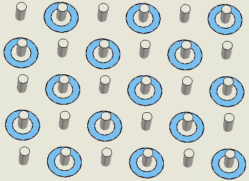
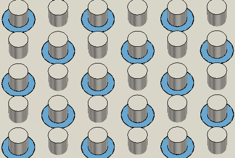

Low inductance power plane and socket design
Power planes and the sockets are the most critical in the design of a PDN (power distribution network) for the UHC4 / UHC4T. They must be designed with the absolute lowest impedance possible.
This is achieved by careful design of
- power planes (horizontal routing), and
- vias (vertical routing).
To create low inductance connection, DUT designers use "multi-power multi-ground" solution for the power supplies with the highest switched currents.
This requires optimization of the horizontal and vertical routing of these "multi-via multi-layer" structures.

Opportunities for improvement:
- Small diameter vias have high inductance
- Via pads on layers that are not connected are causing to use smaller diameter vias
- Via antipads that are too large, are reducing cross section of horizontal current flow.

Advantages of optimum multi-via design
- largest possible via diameters have super low via inductance
- smallest anti-pad diameter that DUT board vendor can consistently warrant creates lowest plane inductance for horizontal current flow
- removed via pads from layers that are not connected allows largest via diameter and lowest
plane inductance for horizontal current flowNote Use modeling tool to find optimized structure to satisfy both horizontal (Lplane) and vertical (Lvia) minimum.
Functional changes
- Introduced in SmarTest 7.2.2